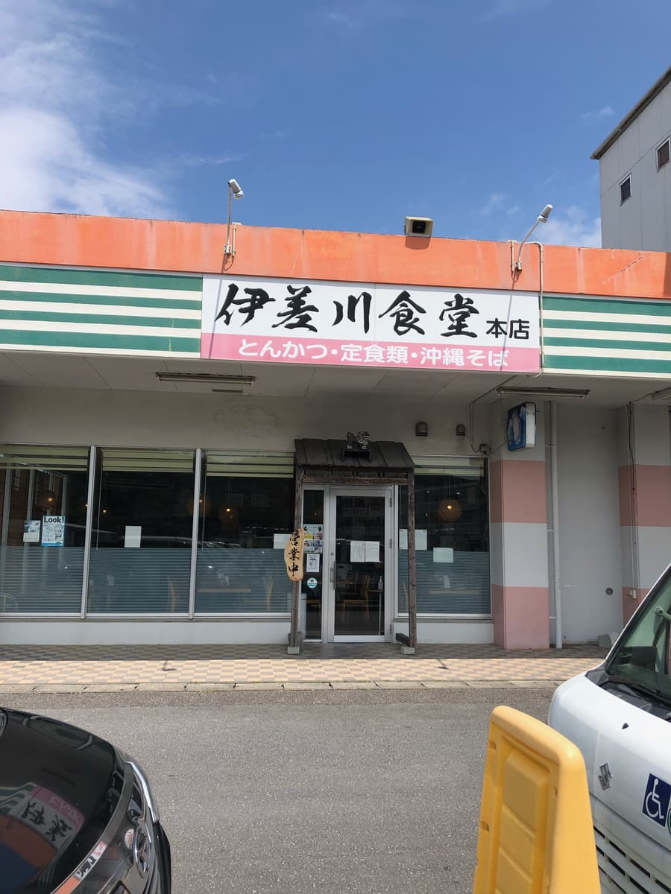
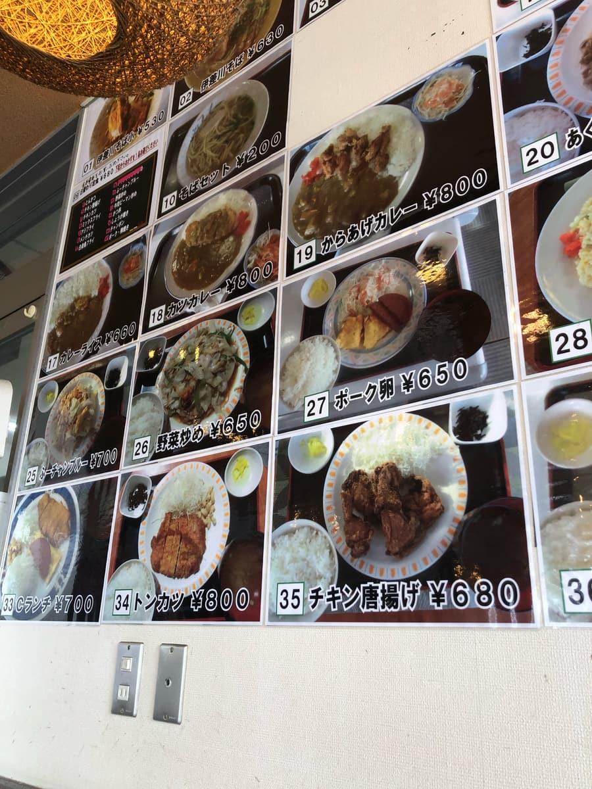
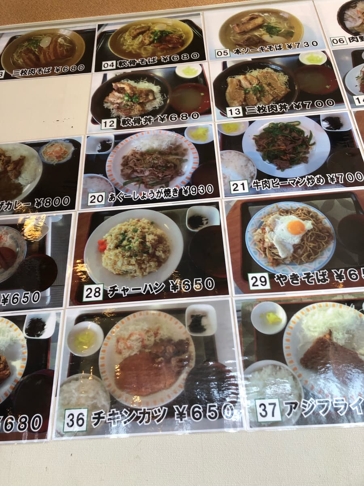
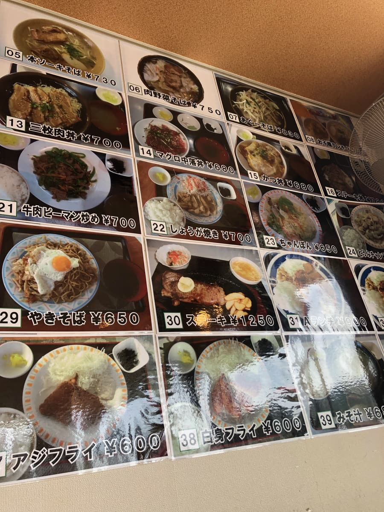
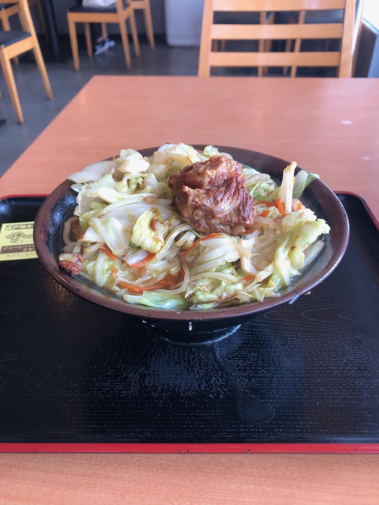
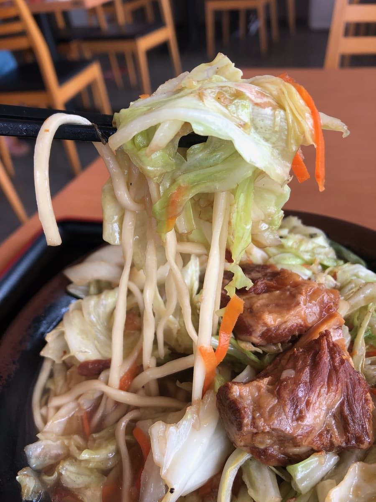
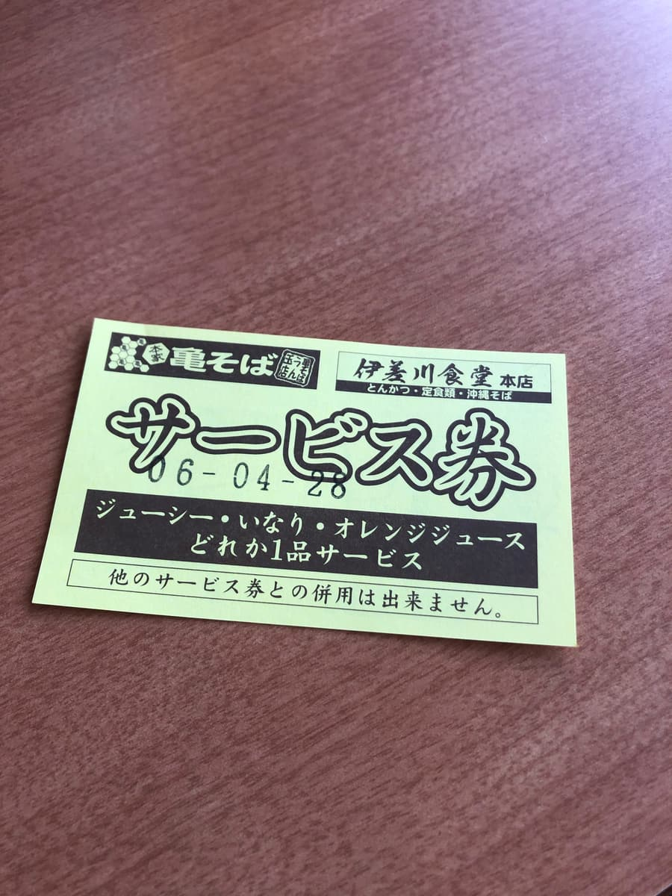
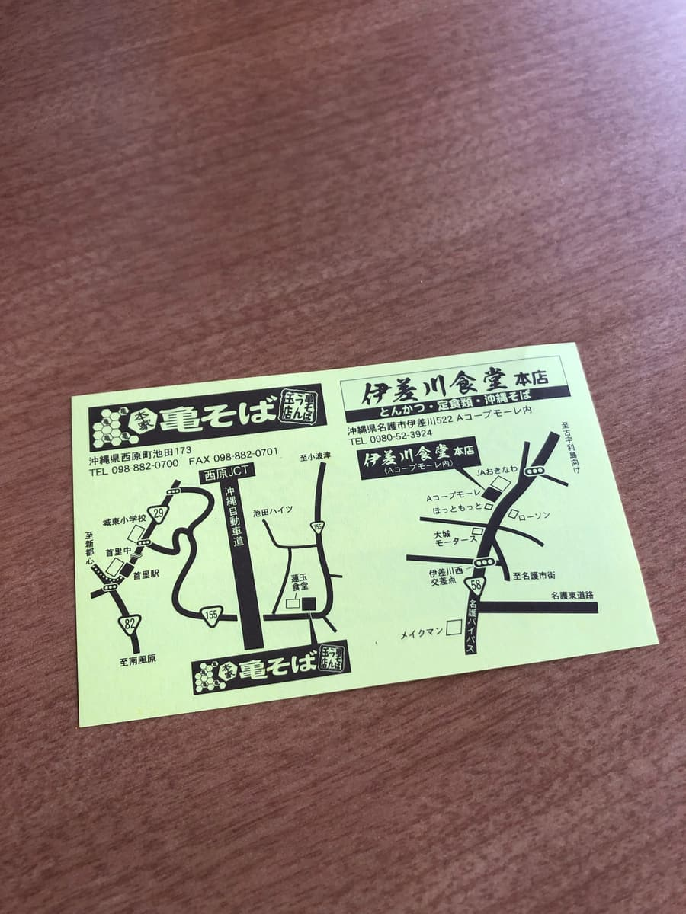

I went to eat here in April 2024 😄

It feels like a shop loved by the locals 😁



At this shop, there don't seem to be menus on the tables, so you choose from the menus posted on the wall or at the ticket machine 😄
From the menu I chose the "meat and vegetable soba".

The meat and vegetable soba has arrived. The price is relatively affordable compared to other shops, but the volume is decent 😁
First, as usual, the soup. A pork-bone-broth-based soup. Simply tasty.

Next I try the noodles. Thin, straight, and soft. The soft-bone pork ribs are also melt-in-your-mouth tender and delicious.
There are plenty of vegetables too, and they're also simply tasty.


I got a coupon for one free item 😁 Looking closely at the back, it seems it can be used not only here at Isagawa Shokudo but also at Kame Soba in Nishihara Town.
Indeed, the "meat and vegetable soba" I ate this time seemed similar to the meat and vegetable soba I ate before at "Honke Kame Soba Wakasa branch". Are they some kind of sister shop to Kame Soba?
Rating (9/15): Simply tasty. I thought it was similar to the meat and vegetable soba at "Honke Kame Soba Wakasa branch" I ate before. The price was cheaper here. How about trying it once when you come to Nago City 😄
Noodles: ★★★☆☆（3）
Soup: ★★★☆☆（3）
Toppings: ★★★☆☆（3）